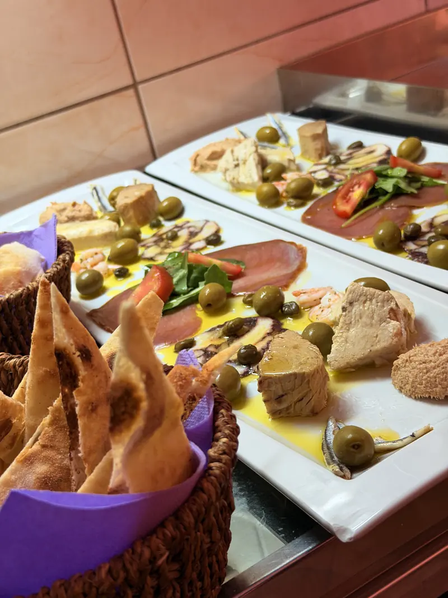
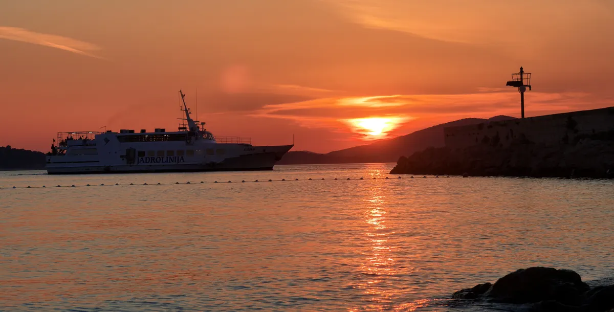

- 0 cars
- 15 minutes from Vodice
- Protected Croatian heritage
- Home of Faust Vrančić

Prvić Šepurine · Šibenik archipelago
Konoba Bare
An island where time moves more slowly
Take it slow
An island where time moves more slowly

As early as the Middle Ages, Prvić was a refuge for the aristocracy of Šibenik: a place to escape the bustle of the city and the plague on the mainland. The noble families Tavelić, Divnić, Šižgorić and Draganić-Vrančić built their summer villas here, and the Renaissance manor of the Draganić-Vrančić family still stands in Šepurine today.
Centuries later, the island still works to the same recipe: steep lanes, the church bell, and a sea that outvoices them all. Nobody ends up here by accident. You come because you are looking for exactly this kind of peace.
Bare is a family konoba, here since 2008. All year round the doors are open as a café bar, a place where the island slows down over coffee with the sea in front of it. In summer we become a konoba and pizzeria, with tables full of guests who sailed over on the Lara boat line looking for that same peace.
On the table are cold platters of the sea: salt-cured sardines, smoked tuna, poached swordfish and our homemade tuna pâté, alongside prosciutto, cheese and olives. Octopus and meat ispod peke (under the iron bell) are prepared to order, a day ahead, because good things here are worth waiting for. And for a longer table and the whole family, there is pizza.
Welcome to our konoba, and to our island.

Prvić Šepurine




Konoba Bare is more than a table by the sea.
Take our boat Bare and explore the hidden coves of Prvić and the surrounding islets at your own pace: a quiet anchorage for a swim, lunch out on the water, a sunset far from the crowds.
Sailing details and price: on request, by phone or at your table in the konoba.
Rental enquiry · 022 448 094 Or simply ask your waiter the next time you sit down: the boat is moored in the harbour, a few steps from your table.


“An evening on Prvić asks for nothing, only that you stay a little longer.”
Prvić Šepurine, Prvić Island
Šibenik-Knin County, Croatia
The island of Prvić is car-free. You arrive on the Lara boat line, the regular service from Šibenik and Vodice to Prvić Šepurine. From the pier, it is a short walk through the stone lanes to the konoba.
Café bar: 07:00 – 23:00.
Kitchen: 14:00 – 22:00.
For larger tables and peka, give us a call, and we will work around the Lara boat timetable too.
Phone: +385 22 448 094
Šepurine is reached by the Vodice–Prvić boat line — the crossing takes about 15 minutes, with several departures a day.
Ferry timetable 2026 (PDF) Source: Jadrolinija